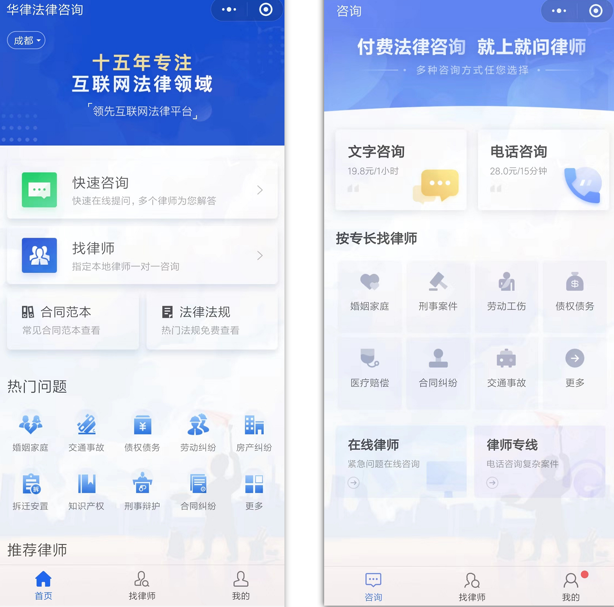
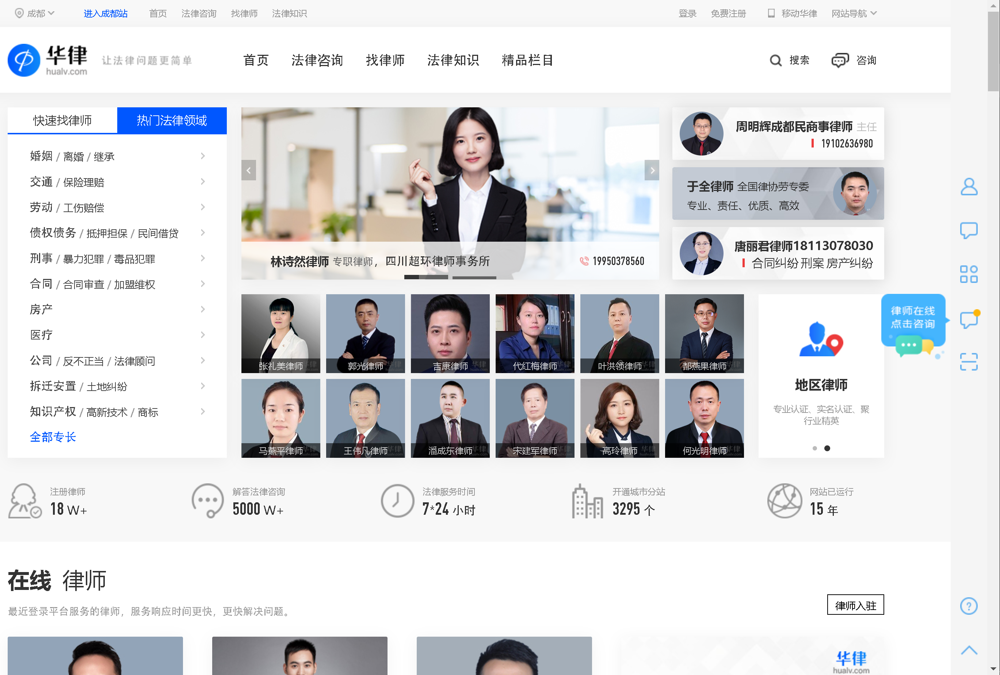
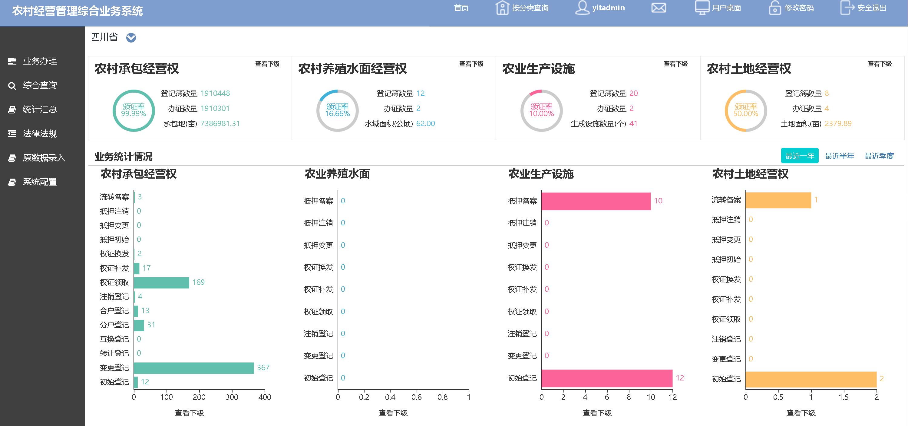
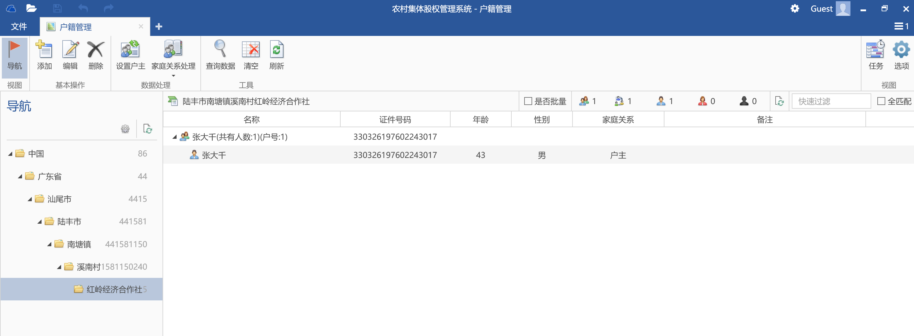
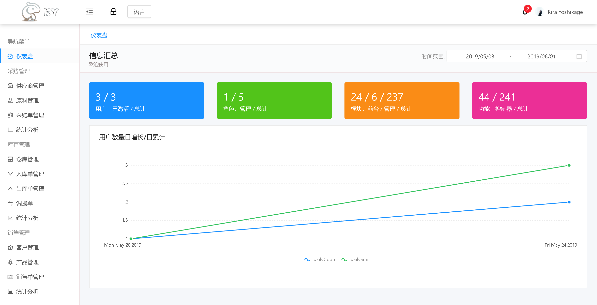

-
- Basic info. 基本信息
- 个人信息: 张自强
- 性别: 男
- 毕业院校: 成都工业学院
- 学历: 本科
- 专业: 计算机科学与技术
- 工作年限: 应届生，实习期一年
- GitHub: www.github.com/zzq424
- 崇拜的人: Anders Hejlsberg
-
- Skill. 技能清单
后端
-
C#/.NET
了解WPF的开发
掌握ASP.NET Core, 了解基于Docker容器进行微服务开发
掌握Entity Framework、Dapper等ORM框架的使用
掌握设计模式、领域驱动设计模式以及AOP面向切面编程
熟悉.NET标准库及其他常用框架及库的使用
-
数据库
熟悉SQL Server、MySQL、MongoDB、Sqllite的使用
了解sql性能调优
-
其他技术
能够使用云技术进行应用开发
掌握RabbitMQ及阿里云的MNS消息服务的使用
掌握Redis、Memcache等缓存技术的使用
了解Docker，可使用Docker进行基于容器的开发
了解Nginx，可使用Nginx搭建简单站点
前端
-
HTML / CSS
能够编写语义化的 HTML，模块化的 CSS，完成较复杂的布局
能够较为熟练的使用bootstrap、Ant-Design设计页面样式
-
JavaScript
熟悉TypeScript编程语言
熟悉Angular、Vue、jQuery等框架或库的使用
能够独立进行小程序、PC端、移动端等平台的开发，了解各平台下的差异
-
- Experience. 项目与工作经验
 工作经历
工作经历
-
华律网络有限服务公司
于2018.6.21 ~ 2019.9.6期间，在华律担任C#工程师的工作
-
负责微信、百度、头条、360等小程序的前后台开发
前端使用uni-app和vue进行跨端开发，后端使用.NET Core提供服务支持

-
参与PC站、M站以及MIP站的开发与维护，主要负责将WebForm程序升级为以.NET Core为基础的MVC架构

-
参与网站后端的技术架构升级，使用steeltoe对原单体应用程序进行微服务化
-
-
四川鱼鳞图信息技术股份有限公司
于2018.6.21 ~ 2019.4.20期间，在鱼鳞图公司担任开发工程师的工作
-
独立负责农经管理综合系统的开发与维护（兼任前后端），重构系统设计，将单体应用通过服务分解改造为通过WCF进行通讯的分布式系统
编写系统开发过程中的各类文档以及负责与政府客户沟通的工作

-
参与建库工具的开发（WPF），采用插件式的开发方式对系统进行定制，主要负责Office、数据库质检等方面的工作

-
负责其他ASP.NET系统的维护工作
-
 个人项目
个人项目
-
LaconicInvoicing 源代码
LaconicInvoicing是我的毕业设计项目，用于满足中小型企业进销存业务的进销存管理系统
以Asp.Net Core为后端，Angular为前端进行开发
使用技术：
前端：Angular、TypeScript、Rxjs、NG-ZORRO、NG-ALAIN
后端：ASP.NET CORE、Identity、EF Core、MySQL、OSharpNS
 -
GustMVC 源代码 Demo
基于.NET Standard开发的跨平台MVC框架，参考了ASP.NET MVC的大部分功能，支持服务器视图渲染以及Web API
主要用于研究微软的MVC框架的运行原理
使用技术：
Razor、NVelocity、Roslyn动态编译、WebSocket

-
AspectFlare 源代码 Demo
KiraNet.AspectFlare是一个轻量级的AOP库，支持基于拦截器的AOP编程模式
基于动态代理的思想，在运行时通过Emit技术生成动态程序集和动态代理类型从而对目标方法进行拦截，可支持对类和接口的代理，目前已集成Microsoft.Extensions.DependencyInjection
使用技术:
动态代理、反射、依赖注入、Emit

张自强的简历
(ง •_•)ง 努力~
-
- Contact. 联系方式
- 电话: 15888789910
- 邮箱: kirayoshikage@qq.com/a>
- 微信: z997525106
- QQ: 997525106
-
- Job. 应聘岗位
- C#工程师
我是一个对编程由衷热爱、有趣的工程师。
我目前正在寻找后端工程师岗位的工作机会，希望借此为贵司献上我的一点绵薄之力，快招我到碗里来吧！